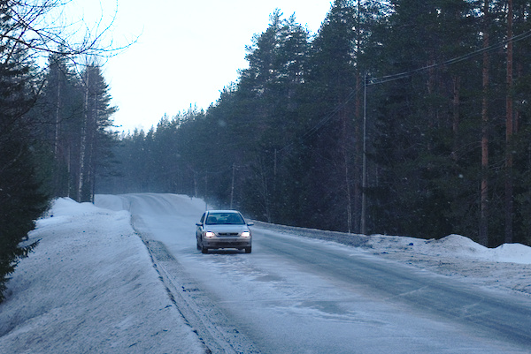
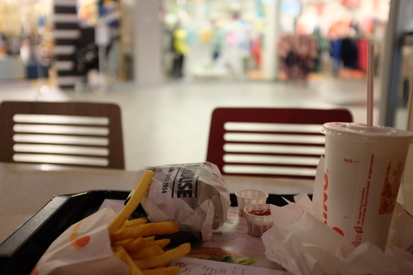
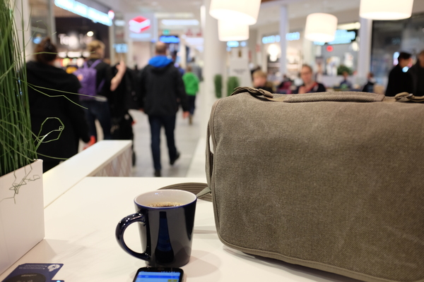
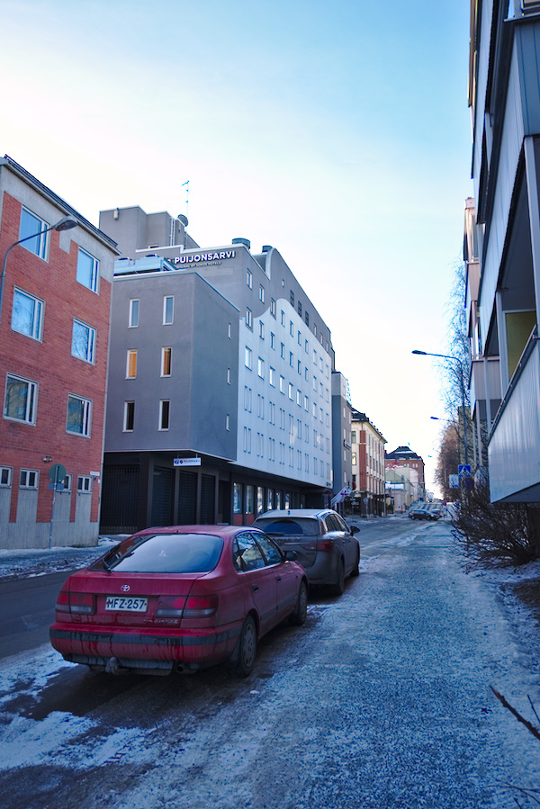
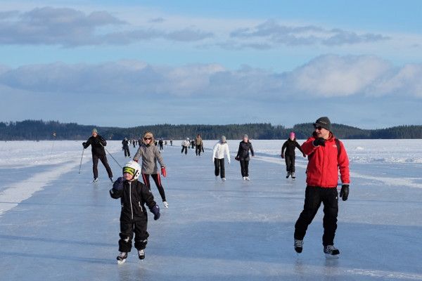

Kuopio 18.2.2017
Kävin Kuopiossa tänään. Viimeksi vappuaattona 2016. Kaupunki näyttää voivan hyvin!
Pinnallinen päämäärä matkalle oli käydä IKEAssa ostamassa uusi työtuoli tai kaksi, toisaalta testata viikolla vastaanottamani ThinkTank Retrospective 7 tosikäytössä. Lisäksi Kuopio on miellyttävä kaupunki, jossa kävisi mielellään useamminkin.
Lauantain sääennuste oli lupaava koko alkuviikon ajan. Puolipilvistä tai jopa kokonaan aurinkoista, lämpötila lievästi plussan puolella, jonkin verran tuulta. Näillä spekseillä oletettavissa oli päivä, joka olisi kaunis, mutta hivenen kylmä, jos ei hieman ylipukeudu ennusteeseen nähden. Pitkäkaulainen "kovien pakkasten" aluspaita teki tehtävänsä, ulkona oli miellyttävä olla.
Outokummussa paistoi aamulla aurinko kirkkaasti, kuten Kuopioon luvattiin. Lähdin hieman suunniteltua aikaisemmin, koska miksipä ei. Nopeasti länteen ajaessani pilvet kerääntyivät auringon eteen ja lyhytkestoinen lumipyry jopa vallan peitti ajoväylät hyvin paksulla raemaisella pulverilla.

Saavuin Matkukseen noin 80 minuutissa. En kellottanut tosin. Matkaa perille on noin 110 kilometriä. Liikenne oli sujuvahkoa. Pohjois-Savon maaperää mukailevat maantiet tuntuvat hyvältä Outokumpu-Joensuun tasaisille ja tylsiksi käyneille valtaväylille. Toisaalta voin kuvitella, että talven liukkailla ja paksujen lumisateiden aikana voivat Savon tiet olla ehkä liiankin jännittäviä ajaa. Parempi näin päin, että oma työmatka on tylsä ja turvallinen, ja että jännitys odottaa 100 kilometrin päässä.
Ensin suunnittelin syöväni aamupalan Matkuksessa, mutta nautinkin kevyen pikapuuron ennen lähtöä lämmikkeeksi. Tämä oli hyvä idea, koska nyt saatoin hoitaa ikävät bisnekset IKEAssa pois ensihätään ja sitten suunnata Burger Kingiin hieman tasapainoisemman lounasajan saavuttamiseksi.
IKEA
Työpöytäni on maasta 70 senttiä ja pöydän paksuus on kolmisen senttiä; löydettyäni IKEAn työhuonesalin onnistuin mittanauhan ja kampisäätöisen työpöydän avulla lavastaa omat kotiolot näppärästi. Tähtäimessä oli jokseenkin kehuttu Markus-työtuoli, mutta se osoittautui haasteelliseksi käsinojiensa kanssa 70/73-senttiselle työpöydälle. Mukavasti vaihtoehtoinen tuoli, Renberget, istui tuohon korkeuteen oikein hyvin. Se on vielä noin 100 euroa halvempikin kuin Markus, joten hyvin kävi, etten tilannut tuoleja postitse kotiini laiskuuksissani.
Ostin kakkostyötuoliksi Nilserikin, joka palvelee sekin ihan näppärästi, mutta yhtään parempi selälle tämä ei varmaan ole, yhtä helppo on istua kyyryssä kuin millä tahansa muullakin tuolilla. Jos joskus käyn hakemassa vielä varsin tukevan oloisen kampipöydän Ikeasta tai jostain, voisi kokonaisuus toimia oikein mainiosti kyllä. Nykyään "kotitoimistolla" ei tule istuttua muutamaa tuntia päivässä enempää, joten korkea pöytä ja selkänojaton jakkara voi hyvinkin olla ergonomisesti paras ratkaisu minulle.
IKEAn sokkeloihin meinasi jälleen eksyä, ja taival itsepalveluhalliin oli tuskastuttava. Lopussa kiitos seisoi, ja itsepalvelukassaa oli ilo käytellä.
Burger King ja Wayne's Coffee
Burger King tuli Kuopioon jokunen aika sitten, ja nyt sitten kävin testaamassa sen. BK:n hampurilaiset ovat mielestäni selvästi pikaruokapaikkojen parhaita, hintakin on erittäin kohtuullinen makuun nähden. Ranskalaiset olivat Matkuksessa aika huonoja, vähän kuten Helsingin Mannerheimintien BK:ssa alkuaikoinaan (sittemmin paikassa taianomaisesti ranut paranivat oikein syömäkelpoisiksi). Jätin vajaan puolet roskiin.

BK:n jälkeen idea oli siirtyä Kuopion keskustaan hörppimään kahvit ja aloittamaan huvittelut. Kammotuksekseni ikkunasta näkyi vain sankkaa lumisadetta. Kenties samainen myräkkä kuin minkä läpi ajoin, tuli nyt Kuopioon? Tässä kelissä ei voi kunnolla valokuvailla. Lauantain kunniaksi Elisa/Saunalahden 3G/4G-verkko oli käytännössä ihan jumissa, ja säätietoja sai odotella tuskastuttavan pitkään, eikä nekään sitten kertoneet minulle yhtään mitään, mitä en jo olisi arvannut.
Päädyin odottamaan lumensaannin loppumista kahvitauon ajaksi. Ensimmäinen idea oli kokeilla Arnold's, mutta palvelu oli surkeata. Kirosanojen saattelemana siirryin Wayne's Coffeehen, jossa sitten vastaavasti sain eteeni kupin pahuksen hyvää kahvia. Todella maistuva kupponen tosiaan.

Halpa bensa
Sinä aikana sade oli kuin olikin hälvennyt, joten suunnistin autolle ja lähdin siirtymään keskustaa kohti. Joensuussa 98E5 oli loppuviikon ajan aika kallista, peräti niinkin korkealla kuin 1,609 eur/L. Outokummussa ja Liperin Käsämässä hintataso on noin 5 senttiä/L halvempaa. Toivalassa ja ysitien varressa olleella SEO:lla oli hinnat noin Joensuun tasolla.
Onneksi päädyin ajamaan hitaita teitä pois Matkuksesta, sillä ABC tarjoili menovettä miellyttävään 1,509 euron/L hintaan. Oikein hyvä diili! Rahallisesti tämä tietysti säästi minulle vain 1,70–3,80 euroa, mutta säästö on säästö.
Keskusta
Kuopion keskustassa on samanlaista taikaa kuin etelä-Helsingissä. Järkevä ruutukaava, historiallisia taloja ja kivaa arkkitehtuuria. Auton vein ilmaiselle paikalle Minna Canthin ja Snellmanin kulmaan. Jalkakäytävät ovat vahvasti jäisiä, mutta vielä vahvemmin hiekoitettuja. Liukasta ei tahtonut olla missään.

Suuntasin Torille, joka oli varsin hiljainen. Toivoin, että lopputalven ensimmäiset lämpimät ja valoisat päivät olisivat vähän tuoneet jotain tapahtumia ytimeen. No ei sitten. Vaikka Waynen kahvi vielä hemmotteli jälkimaullaan kitalaessa, hain ärrältä toisen kahvin, jotta sain sormet lämpimiksi. Kuppi kahvia ulkona on oudon tehokas keino.
Tarkoitus oli käydä levykauppa Äxässä vähän tutkimassa paikkoja, mutta perhana ei löytynyt järkevässä ajassa. Tulliportinkatu 36 oli sen osoite, mutta Tulliportinkatu 33 muuttuu yhtäkkiä Tulliportinkatu 44:ksi toisella puolen tietä ja Äxää ei missään näkyvissä. Kävelin pari korttelia ilmeisesti vikasuuntaan ja löysin vain Tulliportinkatu 26:sta sitten. Ajattelin että olkoonsa.
Istahdin torin laidalle kahvini ja kamerani kanssa, ja perhanan penkin alainen jää oli niin liukas, että molemmat lensivät maahan, kamera otti päältä ja objektiivista osumaa. Onneksi mitään ei näyttänyt käyneen laitteille. Kahvikin roiskui vain vähän maahan. Penkillä oli kahvin kanssa tarpeeksi lämmin istuskella vain.
Kävin lopuksi matkustajasatamassa. Järvellä on hyvät ja paksut jäät, ja siellä pidettiin ilmeisesti jotain jäämaratoonia. Ihmiset olivat luistimin ja potkukelkoin liikkeellä. Makkaraa paistettiin ja (vähäiset) ihmiset vaikuttivat nauttivat valoisasta päivästä, joka oli ihanteellinen urheiluun. Tuulikin nimittäin tyyntyi iltapäivää kohden. Kokeilin vähän kamerani jatkuvatarkenteista autofokusta, kohta uskallan katsoa kuvia.

Kaikin puolin keikka jäi paljon lyhyemmäksi kuin mitä olisin halunnut, mutta osittain sen takia kun ihmisiä ei ollutkaan lauantaiaktiviteeteissa niin paljoa kuin toivoin, matkaseura ei halunnutkaan tulla mukaan, ja uudet tuolit kiinnostivat kasata ja kokeilla, niin päädyin päättämään kaupunkikävelyni reiluun tuntiin. Kaikin puolin keikka oli Matkuksen puolesta taivaallinen ja keskustan puolesta ihan jees. Tänä vuonna pitäisi yrittää käydä useammin!
X-T1
35-millinen on hyvä lasi kaikkeen ulkokuvailuun. 18-millinen sai olla vaihtopenkillä pitkälti koko ajan.
Vaikka X-T1:n iso etsin onkin niin mahdottoman kirkas verrattuna X100T:n etsinkuvaan, jostain syystä ulkona tahtoo asiat näyttää hyvin himmeältä. Joko kamera valottaa aneemisesti lumivaltaiset kuvat, tai etsin jotenkin on säädettykin kiinteälle kirkkaudelle, joka ei mukaudu valon määrän suhteen. Pitää tutkia manuaalista tietoja.
En tietysti mennyt niin pitkälle, että olisin tieteellisen menetelmän tavoin jopa tarkastanut laukussa olleesta X100T:stä, että tekeekö se samaa etsinkuvalle.
Jatkuvatarkenteisissa kuvissa käytin aluevalintaa keskialueen nopeilta pikseleiltä. Äkkiseltään katsottuna kuvat näyttävät aika monikin epätarkoilta, mutta tarkemmin kun tutkii, on kamera valinnutkin jonkun muun kohteen seurattavaksi. Alustava testi oli kuitenkin hauska tehdä, ei ihme, että jatkuvatarkenteinen autofokus toimintakuvissa on kuuma juttu.
Thinktank Retrospective 7
Tämä laukku osoittautuu oikein hyväksi ja tavallaan myös varoitukset laukun huonoista puolista kävivät ilmi tänään "tositoimissa" paremmin. Minulla on muutama sana valmiina tämän laukun arviointiin toisaalla, joten en kirjoita nyt paljoa tässä.
Sanotaan nyt vain, että laukkuna tämä on tosi hyvä ja tukeva, ja se ei herätä kadulla isosti huomiota. Lokeroiden hienosäätämistä pitää vähän harjoittaa tämän päivän perusteella, ja objektiivin vaihtaminen ilman apupöytää ulkona on hieman riskialtista puuhaa. Se kuitenkin onnistui ihan siedettävästi. Laukku on ollut oikein mainio, ja uskaltaisin sanoa, että hintansa väärti (159 euroa elinikäisellä työ-/materiaalitakuulla). Se on hieman painavampi kuin mitä haluaisin, mutta täydellä kuormalla Fujia (X100T, XT1, 35/1.4, 18/2, vastavalosuojat, akut, salama) se on silti kevyt ja istuu mainiosti vartaloa vasten.
Kuopio
Kuten sanoin, Kuopio huokuu minulle sellaista pikku-Helsinkiä, aina huokunut. Ruutukaava muistuttaa Helsinkiä, kaupungin asukkaat ovat kanssa "riittävän" urbaaneja. Bussit kulkevat kerrostalojen välejä samalla tavalla kuin ratikat Fredrikinkatua.
Tietysti "Kuopio proper" on pitkälti 1-2 päivässä nähty, siinä missä Helsinki vaatii noin 5-7 päivää. Mutta mittakaavaeroista huolimatta näin kaupunki tuntuu minulle. Tuntuu oikein asumiskelpoiselta kaupungilta.